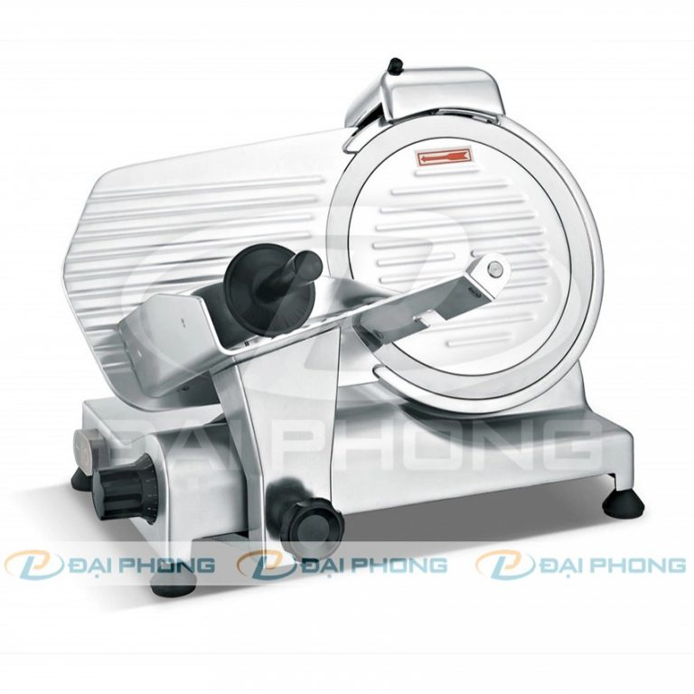
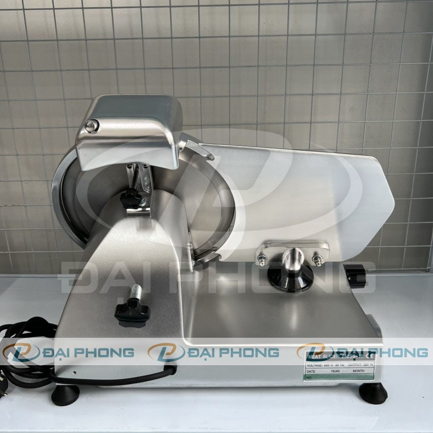
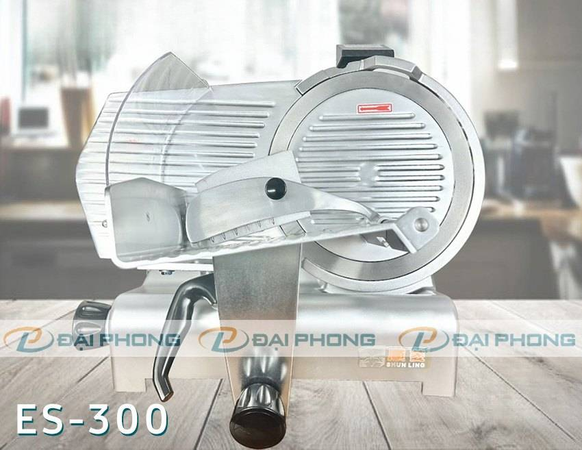
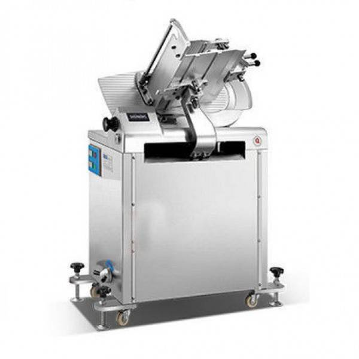

Trong ngành thực phẩm, việc xử lý thịt đông lạnh luôn đòi hỏi sự tỉ
mỉ và công cụ hỗ trợ đắc lực. Một chiếc máy
thái thịt đông lạnh ra đời như giải pháp tối ưu, giúp
bạn tiết kiệm thời gian, công sức mà vẫn đảm bảo được chất lượng thành
phẩm. Không còn cảnh chặt thịt vất vả, không còn nỗi lo miếng thịt
không đều, máy thái thịt đông lạnh mang đến sự tiện lợi và hiệu quả
cho mọi gian bếp, từ căn bếp gia đình nhỏ ấm cúng đến những khu chế
biến thực phẩm quy mô lớn. Hãy cùng tìm hiểu xem thiết
bị chế biến thịt này có gì đặc biệt và tại sao lại trở thành trợ
thủ đắc lực cho mọi người nội trợ và các cơ sở kinh doanh thực phẩm
nhé!

Máy thái thịt đông lạnh là gì?
Máy thái thịt đông lạnh là thiết bị chuyên dụng để cắt các loại thịt
đông lạnh như thịt bò, thịt heo, thịt gà, cá đông lạnh thành những lát
mỏng, đều đặn. Máy được trang bị động cơ mạnh mẽ, lưỡi dao sắc bén và
hệ thống điều chỉnh độ dày lát thịt, giúp người sử dụng dễ dàng thao
tác và thái thịt nhanh chóng, an toàn.
Lợi Ích Sử Dụng Máy Thái Thịt Đông Lạnh:
Tiết kiệm thời gian và công sức: Máy thái thịt
đông lạnh có thể thái hàng chục kilogram thịt trong vài phút, giúp
tiết kiệm thời gian và công sức cho người sử dụng.
Tăng năng suất: Máy giúp tăng năng suất làm việc,
đáp ứng nhu cầu cao của các cơ sở sản xuất, nhà hàng, quán ăn.
Đảm bảo an toàn: Máy thái thịt đông lạnh giúp
thao tác thái thịt an toàn hơn so với sử dụng dao tay, hạn chế nguy
cơ tai nạn lao động.
Tăng tính thẩm mỹ: Máy thái thịt đông lạnh giúp
thái thịt thành những lát mỏng, đều đặn, đẹp mắt, tăng tính thẩm mỹ
cho món ăn.
Tiêu chí chọn mua máy cắt lát thịt chín
Việc lựa chọn máy thái thịt đông lạnh phù hợp đóng vai trò quan trọng
trong việc tối ưu hóa hiệu quả hoạt động và đảm bảo an toàn vệ sinh
thực phẩm cho các cơ sở chế biến thực phẩm, nhà hàng, quán ăn. Dưới
đây là một số tiêu chí quan trọng cần cân nhắc khi chọn mua máy thái
thịt đông lạnh:
1. Công suất:
Công suất là yếu tố quyết định năng suất làm việc của máy. Nên
chọn máy có công suất phù hợp với nhu cầu sử dụng.
Ví dụ:
Nhu cầu sử dụng thấp (dưới 50kg/ngày): Chọn máy có công suất
từ 500W đến 750W.
Nhu cầu sử dụng trung bình (50kg đến 200kg/ngày): Chọn máy có
công suất từ 800W đến 1500W.
Nhu cầu sử dụng cao (trên 200kg/ngày): Chọn máy có công suất
từ 1500W trở lên.
2. Chất liệu lưỡi dao:
Lưỡi dao là bộ phận quan trọng nhất của máy thái thịt đông lạnh.
Nên chọn lưỡi dao được làm từ thép không gỉ cao cấp, sắc bén, bền bỉ
và an toàn thực phẩm.
Một số loại thép phổ biến được sử dụng cho lưỡi dao máy thái thịt
đông lạnh bao gồm:
Thép 420J: Độ cứng cao, sắc bén, dễ mài, giá
thành hợp lý.
Thép 420HC: Độ cứng cao hơn 420J, giữ độ sắc
bén lâu hơn.
Thép 304: Chống gỉ sét tốt, an toàn thực
phẩm, dễ vệ sinh.
Máy thái thịt đông lạnh thường có thể điều chỉnh độ dày lát cắt từ
1mm đến 20mm. Nên chọn máy có độ dày lát cắt phù hợp với nhu cầu sử
dụng.
Ví dụ:
Thái thịt lẩu: Nên chọn máy có độ dày lát cắt từ 1mm đến 3mm.
Thái thịt xào: Nên chọn máy có độ dày lát cắt từ 3mm đến 5mm.
Thái thịt nướng: Nên chọn máy có độ dày lát cắt từ 5mm đến
10mm.
4. Tính năng an toàn:
Nên chọn máy thái thịt đông lạnh có trang bị các tính năng an toàn
như:
Công tắc an toàn: Tự động ngắt máy khi lưỡi dao gặp vật cản.
Vỏ máy chắc chắn, có khả năng chống nước.
Dây điện an toàn, có tiếp địa.
5. Thương hiệu và giá cả:
Nên chọn mua máy thái thịt đông lạnh của các thương hiệu uy tín để
đảm bảo chất lượng và dịch vụ bảo hành tốt.
Giá thành máy thái thịt đông lạnh dao động từ vài triệu đồng đến
vài chục triệu đồng, tùy thuộc vào công suất, chất liệu lưỡi dao,
tính năng và thương hiệu.
Top 3 máy thái thịt đông lạnh được ưa chuộng nhất 2024
Máy thái thịt chín ES250
Máy thái thịt ES-250 là lựa chọn hoàn hảo cho các cơ sở chế biến thực
phẩm, nhà hàng, quán ăn có nhu cầu thái thịt chín, giò chả, thịt đông
lạnh với năng suất cao mà giá thành hợp lý. Máy sở hữu những ưu điểm
nổi bật sau:
Thiết kế nhỏ gọn, tiện lợi:
Kích thước máy nhỏ gọn 470x390x380mm, không chiếm nhiều diện tích,
dễ dàng di chuyển.
Trọng lượng máy nhẹ chỉ 16kg, phù hợp với các gian bếp nhỏ.
Công suất mạnh mẽ, năng suất cao:
Công suất 320W, tốc độ quay 1400 vòng/phút, giúp thái thịt nhanh
chóng, hiệu quả.
Năng suất tối đa lên đến 20kg/ngày, đáp ứng nhu cầu sử dụng của
các cơ sở kinh doanh vừa và nhỏ.
Lưỡi dao sắc bén, đa dạng:
Lưỡi dao được làm từ thép không gỉ cao cấp, sắc bén, bền bỉ và an
toàn thực phẩm.
Có thể điều chỉnh độ dày lát cắt từ 1mm đến 12mm, phù hợp cho
nhiều nhu cầu sử dụng khác nhau.
Dễ dàng sử dụng và vệ sinh:
Thiết kế đơn giản, dễ dàng sử dụng và điều chỉnh độ dày lát cắt.
Các bộ phận dễ dàng tháo lắp, vệ sinh sau khi sử dụng.
Giá thành hợp lý:
So với các loại máy thái thịt công nghiệp khác trên thị trường,
ES-250 có giá thành khá hợp lý, phù hợp với khả năng đầu tư của
nhiều doanh nghiệp.

Máy cắt thịt ES300
Máy thái thịt đông lạnh ES-300 là lựa chọn hoàn hảo cho các cơ sở chế
biến thực phẩm, nhà hàng, quán ăn có nhu cầu thái thịt đông lạnh, thịt
chín, giò chả, phô mai với năng suất cao và độ chính xác cao. Máy sở
hữu những ưu điểm nổi bật sau:
Hiệu suất mạnh mẽ:
Công suất 420W, tốc độ quay 1450 vòng/phút, giúp thái thịt nhanh
chóng, hiệu quả.
Năng suất tối đa lên đến 40kg/giờ, đáp ứng nhu cầu sử dụng cao của
các cơ sở kinh doanh.
Lưỡi dao sắc bén, đa dạng:
Lưỡi dao được làm từ thép không gỉ cao cấp, đường kính 300mm, sắc
bén, bền bỉ và an toàn thực phẩm.
Có thể điều chỉnh độ dày lát cắt từ 1mm đến 15mm, phù hợp cho
nhiều nhu cầu sử dụng khác nhau.
Thiết kế an toàn, tiện lợi:
Máy được làm từ hợp kim nhôm cao cấp, an toàn cho sức khỏe.
Kích thước nhỏ gọn 530x460x460mm, dễ dàng di chuyển và lắp đặt.
Dễ dàng sử dụng và vệ sinh.
Giá thành hợp lý:
So với các loại máy thái thịt công nghiệp khác trên thị trường,
ES-300 có giá thành khá hợp lý, phù hợp với khả năng đầu tư của
nhiều doanh nghiệp.

Máy thái thịt đông lạnh SL-350b
5 Điểm Nổi Bật Của Máy Thái Thịt Đông Lạnh
Công Nghiệp SL350B:
Công Suất Mạnh Mẽ: Trang bị hai động cơ 750W
cho phép máy cắt thịt nhanh, khỏe, đáp ứng nhu cầu của các cơ sở sản
xuất lớn.
Năng Suất Vượt Trội: Ước tính máy có thể
thái hơn 70kg thịt đông lạnh mỗi giờ, bỏ xa các dòng máy khác trên
thị trường.
Điều Chỉnh Độ Dày Linh Hoạt: Bạn dễ dàng tùy
chỉnh độ dày lát cắt từ 1 - 18mm, phù hợp với nhiều mục đích sử
dụng.
Tốc Độ Cao: Bàn gá thịt di chuyển qua lưỡi
dao với tốc độ 42-56 lần/phút, đảm bảo năng suất tối ưu.
Lưỡi Dao Bền Bỉ: Lưỡi dao đường kính 35cm,
làm từ thép trắng, cho phép cắt được cả những khổ thịt lớn.
So Sánh Máy Thái Thịt Đông Lạnh SL350B với
Các Dòng Máy Khác:
Tính
Năng
SL350B
SL300B/SL300E
ES250
ES300
Công Suất (W)
750
750
-
-
Năng Suất ( kg/h )
70+
40-50
20-
30-
Độ Dày Lát Cắt (mm)
1-18
1-15
1-15
1-15
Đường Kính Lưỡi Dao (cm)
35
30
25
30

So sánh máy thái thịt chín và máy cắt thịt tươi sống
Mặc dù có cùng chức năng là thái thịt, máy thái thịt đông lạnh và máy thái thịt tươi có những
điểm khác biệt đáng kể về thiết kế và hiệu suất:
Tiêu chí
Máy
thái thịt đông lạnh
Máy
thái thịt tươi sống
Công suất
Cao hơn, động cơ mạnh mẽ để cắt thịt đông cứng
Thấp hơn, động cơ vừa phải để cắt thịt mềm
Lưỡi dao
Dày và sắc bén hơn, thường được làm bằng thép chất lượng cao
Mỏng và sắc bén, có thể bằng thép không gỉ hoặc ceramic
Tốc độ cắt
Thường có nhiều tốc độ để điều chỉnh độ dày lát cắt
Có thể có nhiều tốc độ hoặc chỉ một tốc độ cố định
Tính năng
Thường có thêm tính năng an toàn như khóa khi quá tải
Ít tính năng hơn
Độ bền
Cao hơn do được thiết kế để chịu lực lớn
Thấp hơn, dễ bị mài mòn nếu sử dụng để cắt thịt đông lạnh